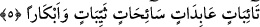

HER ŞEYİ BİLEN
ALLAH BANA HABER VERDİ
3. Peygamber, eşlerinden birine gizlice bir söz söylemişti. Fakat eşi, o sözü
başkalarına haber verip Allah da bunu Peygamber’e açıklayınca, Peygamber bir
kısmını bildirmiş, bir kısmından da vazgeçmişti. Peygamber bunu ona haber verince
eşi: Bunu sana kim bildirdi? dedi. Peygamber: Bilen, her şeyden haberdâr olan
Allah bana haber verdi, dedi.
4. Eğer ikiniz de Allah’a tevbe ederseniz (yerinde olur). Çünkü kalpleriniz
sapmıştı. Ve eğer Peygamber’e karşı birbirinize arka verirseniz bilesiniz ki onun
dostu ve yardımcısı Allah, Cebrâil ve mü’minlerin iyileridir. Bunların ardından
melekler de (ona) yardımcıdır.
5. Eğer o sizi boşarsa Rabbi ona, sizden daha iyi, kendini Allah’a veren, inanan,
sebatla itâat eden, tevbe eden, ibâdet eden, oruç tutan, dul ve bâkire eşler verebilir
“Peygamber eşlerinden birine gizlice bir söz söylemişti.” Arapça’da “isrâr”
masdarı, açıkça bildirmek mânâsına gelen i‘lân masdarının aksine gizlemek demektir.
Gizleme masdarı hem nesnelerin gizlenmesi ve hem de mücerred olan şeylerin
gizlenmesi mânâsında kullanılır. Yine bu kelimeden türeyen “essir” kelimesinin mânâsı
insanın kendi içinde gizlediği söz demektir. Arapçada “esrartu ilâ fulânin hadîsen” denir
ki, bunun mânâsı: “Ben filan kişiye gizlice bir söz söyledim” demektir. Buna göre “el-
isrâru ile’l-gayr” yâni başkasına gizlice sır vermek bu sözün sır verilen kimseye -her ne
kadar başkasına gizlemeyi gerektirse de- sır verilen kimseye karşı açığa vurulmasını
gerektirir. Şu halde “esrartü ilâ fulânin” yâni “ben filancaya sır verdim” demek bir
açıdan o sözün açığa vurulmasını, bir başka açıdan da gizlenmiş olmasını gerektirir.
Âyet metninde yer alan “en-nebiyyü” kelimesi ile kasdedilen Peygamber